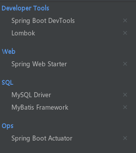
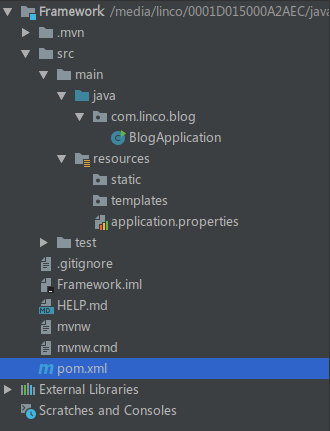
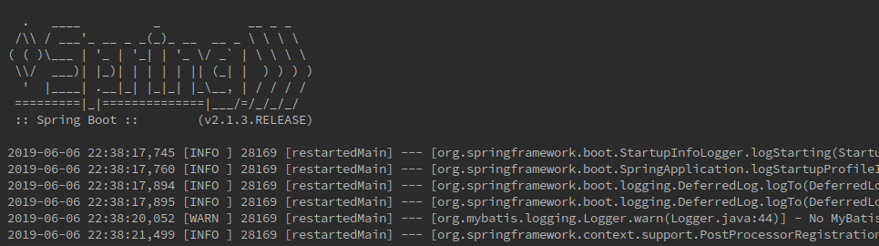
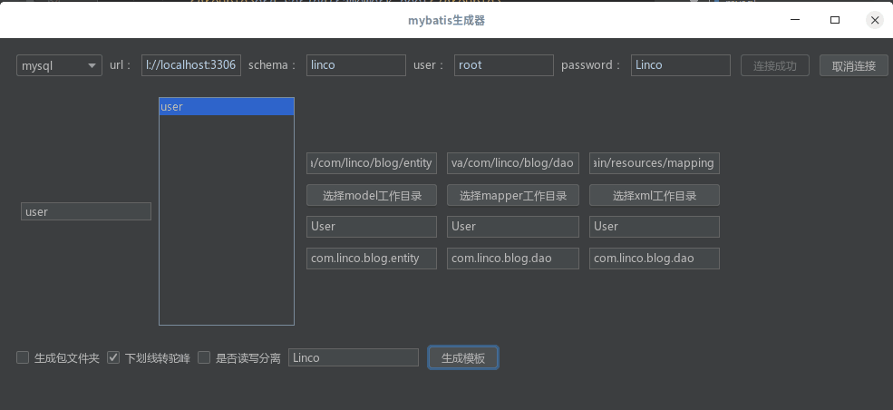
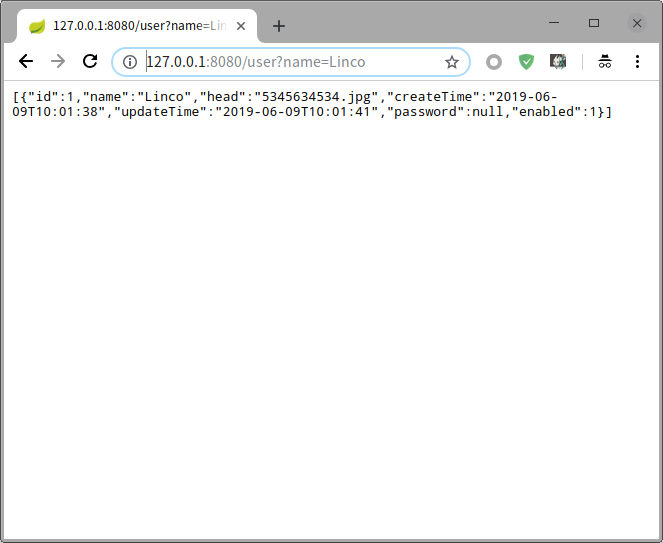

<!DOCTYPE html>
<html lang class="loading">
<head><meta name="generator" content="Hexo 3.8.0">
    <meta charset="UTF-8">
    <meta http-equiv="X-UA-Compatible" content="IE=edge,chrome=1">
    <meta name="viewport" content="width=device-width, minimum-scale=1.0, maximum-scale=1.0, user-scalable=no">
    <title>组件部署集成-二-Springboot集成Mybatis配置指南 - Linco</title>
    <meta name="apple-mobile-web-app-capable" content="yes">
    <meta name="apple-mobile-web-app-status-bar-style" content="black-translucent">
    <meta name="google" content="notranslate">
    <meta name="keywords" content="Linco, Blog,"> 
    <meta name="description" content="​    
初始化一个Spring Boot项目的方法有很多种, 比如

在线构造 (现在就去)
使用 Spring Initializer 插件
使用 maven/Gradle 配置

几种方法最,"> 
    <meta name="author" content="Linco"> 
    <link rel="alternative" href="atom.xml" title="Linco" type="application/atom+xml"> 
    <link rel="icon" href="/img/icon.png"> 
    <link rel="stylesheet" href="//cdn.jsdelivr.net/npm/gitalk@1/dist/gitalk.css">
    <link rel="stylesheet" href="/css/diaspora.css">

</head>
</html>
<body class="loading">
    <span id="config-title" style="display:none">Linco</span>
    <div id="loader"></div>
    <div id="single">
    <div id="top" style="display: block;">
    <div class="bar" style="width: 0;"></div>
    <a class="icon-home image-icon" href="javascript:;" data-url></a>
    <div title="播放/暂停" class="icon-play"></div>
    <h3 class="subtitle">组件部署集成-二-Springboot集成Mybatis配置指南</h3>
    <div class="social">
        <!--<div class="like-icon">-->
            <!--<a href="javascript:;" class="likeThis active"><span class="icon-like"></span><span class="count">76</span></a>-->
        <!--</div>-->
        <div>
            <div class="share">
                <a title="获取二维码" class="icon-scan" href="javascript:;"></a>
            </div>
            <div id="qr"></div>
        </div>
    </div>
    <div class="scrollbar"></div>
</div>

    <div class="section">
        <div class="article">
    <div class="main">
        <h1 class="title">组件部署集成-二-Springboot集成Mybatis配置指南</h1>
        <div class="stuff">
            <span>五月 22, 2019</span>
            

        </div>
        <div class="content markdown">
            <p>​    </p>
<p>初始化一个Spring Boot项目的方法有很多种, 比如</p>
<ul>
<li>在线构造 <a href="https://start.spring.io/" target="_blank" rel="noopener">(现在就去)</a></li>
<li>使用 Spring Initializer 插件</li>
<li>使用 maven/Gradle 配置</li>
</ul>
<p>几种方法最终得到的都是一个Maven/Gradle构造的项目结构, 插件构造最简单快捷, 已经集成到新版idea中了</p>
<ol>
<li><p>先在idea插件库搜索 Spring Initializer 并安装, 按提示重启</p>
<ol start="2">
<li>new一个project或moudle, 在左侧的列表中会出现 Spring Initializer</li>
<li>一步步往下, 选择构造方式和所需要的组件</li>
<li>点击完成等待项目完成构建</li>
</ol>
</li>
</ol>
<p>示例程序需要勾选的组件包括web, mybatis, developer tools, lombok和mysql-driver, 额外引入的包括durid,  slf4j, logfj2</p>
<p></p>
<p>​    </p>
<p>需要插件: lombok, mybatis-generator, spring-assistant</p>
<p>​    </p>
<p>另外, ORM层有一个快速崛起的框架 JOOQ, 个人感觉比Mybatis好用, 推荐尝试</p>
<p>​    </p>
<p>打开项目, 等待初始化完成</p>
<p></p>
<p>​    </p>
<p>编辑 pom.xml</p>
<figure class="highlight xml"><table><tr><td class="gutter"><pre><span class="line">1</span><br><span class="line">2</span><br><span class="line">3</span><br><span class="line">4</span><br><span class="line">5</span><br><span class="line">6</span><br><span class="line">7</span><br><span class="line">8</span><br><span class="line">9</span><br><span class="line">10</span><br><span class="line">11</span><br><span class="line">12</span><br><span class="line">13</span><br><span class="line">14</span><br><span class="line">15</span><br><span class="line">16</span><br><span class="line">17</span><br><span class="line">18</span><br><span class="line">19</span><br><span class="line">20</span><br><span class="line">21</span><br><span class="line">22</span><br><span class="line">23</span><br><span class="line">24</span><br><span class="line">25</span><br><span class="line">26</span><br><span class="line">27</span><br><span class="line">28</span><br></pre></td><td class="code"><pre><span class="line"></span><br><span class="line"><span class="tag">&lt;<span class="name">dependency</span>&gt;</span></span><br><span class="line">    <span class="tag">&lt;<span class="name">groupId</span>&gt;</span>com.alibaba<span class="tag">&lt;/<span class="name">groupId</span>&gt;</span></span><br><span class="line">    <span class="tag">&lt;<span class="name">artifactId</span>&gt;</span>druid<span class="tag">&lt;/<span class="name">artifactId</span>&gt;</span></span><br><span class="line">    <span class="tag">&lt;<span class="name">version</span>&gt;</span>1.1.17<span class="tag">&lt;/<span class="name">version</span>&gt;</span></span><br><span class="line"><span class="tag">&lt;/<span class="name">dependency</span>&gt;</span></span><br><span class="line"></span><br><span class="line"><span class="tag">&lt;<span class="name">dependency</span>&gt;</span></span><br><span class="line">    <span class="tag">&lt;<span class="name">groupId</span>&gt;</span>org.slf4j<span class="tag">&lt;/<span class="name">groupId</span>&gt;</span></span><br><span class="line">    <span class="tag">&lt;<span class="name">artifactId</span>&gt;</span>slf4j-api<span class="tag">&lt;/<span class="name">artifactId</span>&gt;</span></span><br><span class="line">    <span class="comment">&lt;!-- 这里暂时不能用新版, 因为slf4j2版本未适配 --&gt;</span></span><br><span class="line">    <span class="tag">&lt;<span class="name">version</span>&gt;</span>1.7.25<span class="tag">&lt;/<span class="name">version</span>&gt;</span></span><br><span class="line"><span class="tag">&lt;/<span class="name">dependency</span>&gt;</span></span><br><span class="line"></span><br><span class="line"><span class="tag">&lt;<span class="name">dependency</span>&gt;</span></span><br><span class="line">    <span class="tag">&lt;<span class="name">groupId</span>&gt;</span>org.apache.logging.log4j<span class="tag">&lt;/<span class="name">groupId</span>&gt;</span></span><br><span class="line">    <span class="tag">&lt;<span class="name">artifactId</span>&gt;</span>log4j-slf4j-impl<span class="tag">&lt;/<span class="name">artifactId</span>&gt;</span></span><br><span class="line"><span class="tag">&lt;/<span class="name">dependency</span>&gt;</span></span><br><span class="line"></span><br><span class="line"><span class="tag">&lt;<span class="name">dependency</span>&gt;</span></span><br><span class="line">    <span class="tag">&lt;<span class="name">groupId</span>&gt;</span>org.springframework.boot<span class="tag">&lt;/<span class="name">groupId</span>&gt;</span></span><br><span class="line">    <span class="tag">&lt;<span class="name">artifactId</span>&gt;</span>spring-boot-starter-log4j2<span class="tag">&lt;/<span class="name">artifactId</span>&gt;</span></span><br><span class="line"><span class="tag">&lt;/<span class="name">dependency</span>&gt;</span></span><br><span class="line"></span><br><span class="line"><span class="tag">&lt;<span class="name">dependency</span>&gt;</span>	<span class="comment">&lt;!-- 加上这个才能辨认到log4j2.yml文件 --&gt;</span></span><br><span class="line">    <span class="tag">&lt;<span class="name">groupId</span>&gt;</span>com.fasterxml.jackson.dataformat<span class="tag">&lt;/<span class="name">groupId</span>&gt;</span></span><br><span class="line">    <span class="tag">&lt;<span class="name">artifactId</span>&gt;</span>jackson-dataformat-yaml<span class="tag">&lt;/<span class="name">artifactId</span>&gt;</span></span><br><span class="line"><span class="tag">&lt;/<span class="name">dependency</span>&gt;</span></span><br></pre></td></tr></table></figure>
<p>​    </p>
<p>Spring boot 默认会引入并使用logback, slf4j不能输出spring框架打印的日志信息, 所以需要把Spring boot引入的logbak先排除</p>
<p>添加依赖配置:</p>
<figure class="highlight xml"><table><tr><td class="gutter"><pre><span class="line">1</span><br><span class="line">2</span><br><span class="line">3</span><br><span class="line">4</span><br><span class="line">5</span><br><span class="line">6</span><br><span class="line">7</span><br><span class="line">8</span><br><span class="line">9</span><br><span class="line">10</span><br></pre></td><td class="code"><pre><span class="line"><span class="tag">&lt;<span class="name">dependency</span>&gt;</span></span><br><span class="line">		<span class="tag">&lt;<span class="name">groupId</span>&gt;</span>org.springframework.boot<span class="tag">&lt;/<span class="name">groupId</span>&gt;</span></span><br><span class="line">		<span class="tag">&lt;<span class="name">artifactId</span>&gt;</span>spring-boot-starter<span class="tag">&lt;/<span class="name">artifactId</span>&gt;</span></span><br><span class="line">		<span class="tag">&lt;<span class="name">exclusions</span>&gt;</span></span><br><span class="line">			<span class="tag">&lt;<span class="name">exclusion</span>&gt;</span></span><br><span class="line">				<span class="tag">&lt;<span class="name">groupId</span>&gt;</span>org.springframework.boot<span class="tag">&lt;/<span class="name">groupId</span>&gt;</span></span><br><span class="line">				<span class="tag">&lt;<span class="name">artifactId</span>&gt;</span>spring-boot-starter-logging<span class="tag">&lt;/<span class="name">artifactId</span>&gt;</span></span><br><span class="line">			<span class="tag">&lt;/<span class="name">exclusion</span>&gt;</span></span><br><span class="line">		<span class="tag">&lt;/<span class="name">exclusions</span>&gt;</span></span><br><span class="line">	<span class="tag">&lt;/<span class="name">dependency</span>&gt;</span></span><br></pre></td></tr></table></figure>
<p>​    </p>
<p>如果有组件报红的话maven运行重新导入</p>
<p>maven下载卡住<a href="https://lincoxiaoq.github.io/2019/05/10/maven%E9%85%8D%E7%BD%AE%E5%9B%BD%E5%86%85%E6%BA%90,%20%E7%A8%B3%E5%AE%9A%E6%8F%90%E9%80%9F/" target="_blank" rel="noopener">看这里</a></p>
<p>​    </p>
<p>配置组件之前先改一些东西</p>
<p>自动建立的项目采用application.properties, 这个有点过时了, 我们重命名为application.yml. 现在文件是空的所以不用转换内容</p>
<p>​    </p>
<p>开发环境和生产环境会采用不同的配置, Spring提供了很好的解决方案, 在application.yml写入以下配置</p>
<figure class="highlight yaml"><table><tr><td class="gutter"><pre><span class="line">1</span><br><span class="line">2</span><br><span class="line">3</span><br></pre></td><td class="code"><pre><span class="line"><span class="attr">spring:</span></span><br><span class="line"><span class="attr">  profiles:</span></span><br><span class="line"><span class="attr">    active:</span> <span class="string">dev</span></span><br></pre></td></tr></table></figure>
<p>​    </p>
<p>然后建立文件 application-dev.yml和application-pro,yml, 以后又区别的配置写在对应文件中, 以后切换环境只需要修改active项. active项可以有多个值, 用”,”隔开, 不同配置会叠加, 但相同配置会冲突</p>
<p>​    </p>
<h4 id="log4j2"><a href="#log4j2" class="headerlink" title="log4j2"></a>log4j2</h4><p>在resource下建立log4j2.yml, 使用配置模板如下</p>
<figure class="highlight yaml"><table><tr><td class="gutter"><pre><span class="line">1</span><br><span class="line">2</span><br><span class="line">3</span><br><span class="line">4</span><br><span class="line">5</span><br><span class="line">6</span><br><span class="line">7</span><br><span class="line">8</span><br><span class="line">9</span><br><span class="line">10</span><br><span class="line">11</span><br><span class="line">12</span><br><span class="line">13</span><br><span class="line">14</span><br><span class="line">15</span><br><span class="line">16</span><br><span class="line">17</span><br><span class="line">18</span><br><span class="line">19</span><br><span class="line">20</span><br><span class="line">21</span><br><span class="line">22</span><br><span class="line">23</span><br><span class="line">24</span><br><span class="line">25</span><br><span class="line">26</span><br><span class="line">27</span><br><span class="line">28</span><br><span class="line">29</span><br><span class="line">30</span><br><span class="line">31</span><br><span class="line">32</span><br><span class="line">33</span><br><span class="line">34</span><br><span class="line">35</span><br><span class="line">36</span><br><span class="line">37</span><br><span class="line">38</span><br><span class="line">39</span><br><span class="line">40</span><br><span class="line">41</span><br><span class="line">42</span><br></pre></td><td class="code"><pre><span class="line"><span class="attr">Configuration:</span></span><br><span class="line"><span class="attr">  status:</span> <span class="string">warn</span></span><br><span class="line"></span><br><span class="line"><span class="attr">  Properties:</span> <span class="comment"># 全局变量</span></span><br><span class="line"><span class="attr">    Property:</span></span><br><span class="line"><span class="attr">      - name:</span> <span class="string">sample.level.console</span></span><br><span class="line"><span class="attr">        value:</span> <span class="string">info</span></span><br><span class="line"><span class="attr">      - name:</span> <span class="string">sample.path</span></span><br><span class="line"><span class="attr">        value:</span> <span class="string">target/logs</span></span><br><span class="line"><span class="attr">      - name:</span> <span class="string">project.name</span></span><br><span class="line"><span class="attr">        value:</span> <span class="string">sample-test</span></span><br><span class="line"></span><br><span class="line"><span class="attr">  Appenders:</span></span><br><span class="line"><span class="attr">    Console:</span>  <span class="comment">#输出到控制台</span></span><br><span class="line"><span class="attr">      name:</span> <span class="string">CONSOLE</span></span><br><span class="line"><span class="attr">      target:</span> <span class="string">SYSTEM_OUT</span></span><br><span class="line"><span class="attr">      ThresholdFilter:</span></span><br><span class="line"><span class="attr">        level:</span> <span class="string">$&#123;sys:sample.level.console&#125;</span> <span class="comment"># 系统参数优先</span></span><br><span class="line"><span class="attr">        onMatch:</span> <span class="string">ACCEPT</span></span><br><span class="line"><span class="attr">        onMismatch:</span> <span class="string">DENY</span></span><br><span class="line"><span class="attr">      PatternLayout:</span></span><br><span class="line"><span class="attr">        pattern:</span> <span class="string">"%d&#123;yyyy-MM-dd HH:mm:ss,SSS&#125; [%-5p] %processId [%t] --- [%l] - %m%n"</span></span><br><span class="line"></span><br><span class="line"><span class="attr">    RollingFile:</span> <span class="comment"># 输出到文件</span></span><br><span class="line"><span class="attr">      - name:</span> <span class="string">ROLLING_FILE</span></span><br><span class="line"><span class="attr">        ignoreExceptions:</span> <span class="literal">false</span></span><br><span class="line"><span class="attr">        fileName:</span> <span class="string">$&#123;sample.path&#125;/$&#123;project.name&#125;.sample</span></span><br><span class="line"><span class="attr">        filePattern:</span> <span class="string">"$&#123;sample.path&#125;/$$&#123;date:yyyy-MM&#125;/$&#123;project.name&#125;-%d&#123;yyyy-MM-dd&#125;-%i.sample.gz"</span></span><br><span class="line"><span class="attr">        PatternLayout:</span></span><br><span class="line"><span class="attr">          pattern:</span> <span class="string">"%d&#123;yyyy-MM-dd HH:mm:ss,SSS&#125; [%-5p] %processId [%t] --- [%-30.30C&#123;1.&#125;:%-4L] - %m%n"</span></span><br><span class="line"><span class="attr">        Policies:</span></span><br><span class="line"><span class="attr">          SizeBasedTriggeringPolicy:</span></span><br><span class="line"><span class="attr">            size:</span> <span class="string">"128 MB"</span></span><br><span class="line"><span class="attr">        DefaultRolloverStrategy:</span></span><br><span class="line"><span class="attr">          max:</span> <span class="number">6</span></span><br><span class="line"></span><br><span class="line"><span class="attr">  Loggers:</span></span><br><span class="line"><span class="attr">    Root:</span></span><br><span class="line"><span class="attr">      level:</span> <span class="string">info</span></span><br><span class="line"><span class="attr">      AppenderRef:</span></span><br><span class="line"><span class="attr">        - ref:</span> <span class="string">CONSOLE</span></span><br><span class="line"><span class="attr">        - ref:</span> <span class="string">ROLLING_FILE</span></span><br></pre></td></tr></table></figure>
<p>​    </p>
<h4 id="mybatis"><a href="#mybatis" class="headerlink" title="mybatis"></a>mybatis</h4><p>在application-dev.yml配置如下</p>
<figure class="highlight yaml"><table><tr><td class="gutter"><pre><span class="line">1</span><br><span class="line">2</span><br><span class="line">3</span><br><span class="line">4</span><br><span class="line">5</span><br><span class="line">6</span><br><span class="line">7</span><br><span class="line">8</span><br><span class="line">9</span><br><span class="line">10</span><br><span class="line">11</span><br><span class="line">12</span><br><span class="line">13</span><br><span class="line">14</span><br><span class="line">15</span><br><span class="line">16</span><br><span class="line">17</span><br><span class="line">18</span><br><span class="line">19</span><br></pre></td><td class="code"><pre><span class="line"><span class="attr">spring:</span></span><br><span class="line"><span class="comment"># datasource 根据自己实际配置</span></span><br><span class="line"><span class="attr">  datasource:</span></span><br><span class="line"><span class="attr">    username:</span> <span class="string">project-user</span></span><br><span class="line"><span class="attr">    password:</span> <span class="string">****</span></span><br><span class="line"><span class="attr">    url:</span> <span class="attr">jdbc:mysql://localhost:3306/(db)?useUnicode=true&amp;characterEncoding=utf-8&amp;useSSL=true&amp;serverTimezone=UTC</span></span><br><span class="line"><span class="attr">    driver-class-name:</span> <span class="string">com.mysql.cj.jdbc.Driver</span></span><br><span class="line"> </span><br><span class="line"><span class="attr">mybatis:</span></span><br><span class="line"><span class="attr">  mapper-locations:</span> <span class="attr">classpath:mapping/*Mapper.xml</span></span><br><span class="line">   <span class="comment"># 改成自己的</span></span><br><span class="line"><span class="attr">  type-aliases-package:</span> <span class="string">com.linco.blog.entity</span></span><br><span class="line"> </span><br><span class="line"><span class="comment">#showSql</span></span><br><span class="line"><span class="attr">logging:</span></span><br><span class="line"><span class="attr">  level:</span></span><br><span class="line"><span class="attr">    com:</span></span><br><span class="line"><span class="attr">      example:</span></span><br><span class="line">        <span class="string">mapper</span> <span class="string">:</span> <span class="string">debug</span></span><br></pre></td></tr></table></figure>
<p>测试运行, 没有问题</p>
<p></p>
<p>​    </p>
<p>添加web到orm各层代码, 测试web到curd的流程</p>
<h5 id="controller"><a href="#controller" class="headerlink" title="controller"></a>controller</h5><figure class="highlight java"><table><tr><td class="gutter"><pre><span class="line">1</span><br><span class="line">2</span><br><span class="line">3</span><br><span class="line">4</span><br><span class="line">5</span><br><span class="line">6</span><br><span class="line">7</span><br><span class="line">8</span><br><span class="line">9</span><br><span class="line">10</span><br><span class="line">11</span><br><span class="line">12</span><br><span class="line">13</span><br><span class="line">14</span><br><span class="line">15</span><br><span class="line">16</span><br><span class="line">17</span><br><span class="line">18</span><br><span class="line">19</span><br><span class="line">20</span><br><span class="line">21</span><br><span class="line">22</span><br><span class="line">23</span><br><span class="line">24</span><br><span class="line">25</span><br><span class="line">26</span><br><span class="line">27</span><br><span class="line">28</span><br></pre></td><td class="code"><pre><span class="line"></span><br><span class="line"><span class="meta">@RestController</span></span><br><span class="line"><span class="meta">@RequestMapping</span>(<span class="string">"/user"</span>)</span><br><span class="line"><span class="keyword">public</span> <span class="class"><span class="keyword">class</span> <span class="title">UserController</span> </span>&#123;</span><br><span class="line">    <span class="meta">@Autowired</span></span><br><span class="line">    UserService userService;</span><br><span class="line"></span><br><span class="line">    <span class="meta">@GetMapping</span></span><br><span class="line">    <span class="function"><span class="keyword">public</span> List&lt;User&gt; <span class="title">listUser</span><span class="params">(User user)</span></span>&#123;</span><br><span class="line">        <span class="keyword">return</span> userService.queryUser(user);</span><br><span class="line">    &#125;</span><br><span class="line"></span><br><span class="line">    <span class="meta">@DeleteMapping</span>(<span class="string">"&#123;/id&#125;"</span>)</span><br><span class="line">    <span class="function"><span class="keyword">public</span> <span class="keyword">int</span> <span class="title">deleteUser</span><span class="params">(@PathVariable(<span class="string">"id"</span>)</span><span class="keyword">int</span> id)</span>&#123;</span><br><span class="line">        <span class="keyword">return</span> userService.delete(id);</span><br><span class="line">    &#125;</span><br><span class="line"></span><br><span class="line">    <span class="meta">@PostMapping</span></span><br><span class="line">    <span class="function"><span class="keyword">public</span> <span class="keyword">int</span> <span class="title">updateUser</span><span class="params">(User user)</span></span>&#123;</span><br><span class="line">        <span class="keyword">return</span> userService.updateUser(user);</span><br><span class="line">    &#125;</span><br><span class="line"></span><br><span class="line"><span class="comment">/*  这个看业务另写接口, 没必要统一</span></span><br><span class="line"><span class="comment">    @PutMapping</span></span><br><span class="line"><span class="comment">    public List&lt;User&gt; multiUpdate()&#123;</span></span><br><span class="line"><span class="comment">        return null;</span></span><br><span class="line"><span class="comment">    &#125;*/</span></span><br><span class="line">&#125;</span><br></pre></td></tr></table></figure>
<h5 id="service"><a href="#service" class="headerlink" title="service"></a>service</h5><figure class="highlight java"><table><tr><td class="gutter"><pre><span class="line">1</span><br><span class="line">2</span><br><span class="line">3</span><br><span class="line">4</span><br><span class="line">5</span><br><span class="line">6</span><br><span class="line">7</span><br><span class="line">8</span><br><span class="line">9</span><br><span class="line">10</span><br><span class="line">11</span><br><span class="line">12</span><br><span class="line">13</span><br><span class="line">14</span><br><span class="line">15</span><br><span class="line">16</span><br><span class="line">17</span><br><span class="line">18</span><br><span class="line">19</span><br><span class="line">20</span><br><span class="line">21</span><br><span class="line">22</span><br><span class="line">23</span><br><span class="line">24</span><br><span class="line">25</span><br><span class="line">26</span><br><span class="line">27</span><br><span class="line">28</span><br><span class="line">29</span><br><span class="line">30</span><br><span class="line">31</span><br><span class="line">32</span><br><span class="line">33</span><br><span class="line">34</span><br></pre></td><td class="code"><pre><span class="line"><span class="meta">@Service</span></span><br><span class="line"><span class="keyword">public</span> <span class="class"><span class="keyword">class</span> <span class="title">UserService</span> </span>&#123;</span><br><span class="line">    <span class="meta">@Autowired</span></span><br><span class="line">    UserMapper userMapper;</span><br><span class="line"></span><br><span class="line">    <span class="function"><span class="keyword">public</span> <span class="keyword">int</span> <span class="title">insertUser</span><span class="params">(User object)</span></span>&#123;</span><br><span class="line">        <span class="keyword">return</span> userMapper.insertUser(object);</span><br><span class="line">    &#125;</span><br><span class="line"></span><br><span class="line">    <span class="comment">// 根据主键update</span></span><br><span class="line">    <span class="function"><span class="keyword">public</span> <span class="keyword">int</span> <span class="title">updateUser</span><span class="params">(User object)</span></span>&#123;</span><br><span class="line">        <span class="keyword">return</span> userMapper.updateUser(object);</span><br><span class="line">    &#125;</span><br><span class="line"></span><br><span class="line">    <span class="function"><span class="keyword">public</span> <span class="keyword">int</span> <span class="title">update</span><span class="params">(User.UpdateBuilder object)</span></span>&#123;</span><br><span class="line">        <span class="keyword">return</span> userMapper.update(object);</span><br><span class="line">    &#125;</span><br><span class="line"></span><br><span class="line">    <span class="function"><span class="keyword">public</span> <span class="keyword">int</span> <span class="title">delete</span><span class="params">(<span class="keyword">int</span> uid)</span></span>&#123;</span><br><span class="line">        User user = <span class="keyword">new</span> User();</span><br><span class="line">        user.setEnabled(<span class="number">0</span>);</span><br><span class="line">        User.UpdateBuilder updateBuilder = <span class="keyword">new</span> User.UpdateBuilder();</span><br><span class="line">        updateBuilder.where(<span class="keyword">new</span> User.ConditionBuilder().idList(uid)).set(user);</span><br><span class="line">        <span class="keyword">return</span> userMapper.update(updateBuilder);</span><br><span class="line">    &#125;</span><br><span class="line"></span><br><span class="line">    <span class="function"><span class="keyword">public</span> List&lt;User&gt; <span class="title">queryUser</span><span class="params">(User object)</span></span>&#123;</span><br><span class="line">        <span class="keyword">return</span> userMapper.queryUser(object);</span><br><span class="line">    &#125;</span><br><span class="line"></span><br><span class="line">    <span class="function"><span class="keyword">public</span> User <span class="title">queryUserLimit1</span><span class="params">(User object)</span></span>&#123;</span><br><span class="line">        <span class="keyword">return</span>  userMapper.queryUserLimit1(object);</span><br><span class="line">    &#125;</span><br><span class="line">&#125;</span><br></pre></td></tr></table></figure>
<p>​    </p>
<h5 id="dao-mapping-xml"><a href="#dao-mapping-xml" class="headerlink" title="dao, mapping-xml"></a>dao, mapping-xml</h5><p>使用mybatis-generator自动生成</p>
<p></p>
<p>​    </p>
<p>下面两点很重要, 很多教程因为这些原因导致运行时异常</p>
<p>​    </p>
<ol>
<li>Mapper包需要被扫描, 在Springboot项目中, 默认自动扫描启动类所在包和下级目录, 如果目录不在路径范围内, 可以加注解</li>
</ol>
<figure class="highlight plain"><table><tr><td class="gutter"><pre><span class="line">1</span><br></pre></td><td class="code"><pre><span class="line">@MapperScan(basePackages = &#123;&quot;com.linco.blog.dao&quot;&#125;)</span><br></pre></td></tr></table></figure>
<ol start="2">
<li>配置的mapper xml加载目录不会包含子目录, 如果有多层结构, 需要配置多个值, 在application-dev.yml覆盖配置</li>
</ol>
<figure class="highlight plain"><table><tr><td class="gutter"><pre><span class="line">1</span><br><span class="line">2</span><br></pre></td><td class="code"><pre><span class="line">mybatis:</span><br><span class="line">  mapper-locations: classpath:mapping/*Mapper.xml,classpath:mapping/base/*Mapper.xml</span><br></pre></td></tr></table></figure>
<p>​    </p>
<p>测试</p>
<p></p>
<p>​    </p>
<p>最后在nginx上配置服务转发, 方便使用</p>

            <!--[if lt IE 9]><script>document.createElement('audio');</script><![endif]-->
            <audio id="audio" loop="1" preload="auto" controls="controls" data-autoplay="true">
                <source type="audio/mpeg" src="/music/default_bgm.mp3">
            </audio>
            
        </div>
        
    <div id="gitalk-container" class="comment link" data-ae="false" data-ci="978518cc439cd352dd0b" data-cs="2d89825e7db6df72d065714d6b4ac1ce1829b14e" data-r="LincoXiaoQ.github.io" data-o="LincoXiaoQ" data-a="LincoXiaoQ" data-d="false">查看评论</div>


    </div>
    
</div>


    </div>
</div>
</body>
<script src="//cdn.jsdelivr.net/npm/gitalk@1/dist/gitalk.min.js"></script>
<script src="//lib.baomitu.com/jquery/1.8.3/jquery.min.js"></script>
<script src="/js/plugin.js"></script>
<script src="/js/diaspora.js"></script>
<link rel="stylesheet" href="/photoswipe/photoswipe.css">
<link rel="stylesheet" href="/photoswipe/default-skin/default-skin.css">
<script src="/photoswipe/photoswipe.min.js"></script>
<script src="/photoswipe/photoswipe-ui-default.min.js"></script>

<!-- Root element of PhotoSwipe. Must have class pswp. -->
<div class="pswp" tabindex="-1" role="dialog" aria-hidden="true">
    <!-- Background of PhotoSwipe. 
         It's a separate element as animating opacity is faster than rgba(). -->
    <div class="pswp__bg"></div>
    <!-- Slides wrapper with overflow:hidden. -->
    <div class="pswp__scroll-wrap">
        <!-- Container that holds slides. 
            PhotoSwipe keeps only 3 of them in the DOM to save memory.
            Don't modify these 3 pswp__item elements, data is added later on. -->
        <div class="pswp__container">
            <div class="pswp__item"></div>
            <div class="pswp__item"></div>
            <div class="pswp__item"></div>
        </div>
        <!-- Default (PhotoSwipeUI_Default) interface on top of sliding area. Can be changed. -->
        <div class="pswp__ui pswp__ui--hidden">
            <div class="pswp__top-bar">
                <!--  Controls are self-explanatory. Order can be changed. -->
                <div class="pswp__counter"></div>
                <button class="pswp__button pswp__button--close" title="Close (Esc)"></button>
                <button class="pswp__button pswp__button--share" title="Share"></button>
                <button class="pswp__button pswp__button--fs" title="Toggle fullscreen"></button>
                <button class="pswp__button pswp__button--zoom" title="Zoom in/out"></button>
                <!-- Preloader demo http://codepen.io/dimsemenov/pen/yyBWoR -->
                <!-- element will get class pswp__preloader--active when preloader is running -->
                <div class="pswp__preloader">
                    <div class="pswp__preloader__icn">
                      <div class="pswp__preloader__cut">
                        <div class="pswp__preloader__donut"></div>
                      </div>
                    </div>
                </div>
            </div>
            <div class="pswp__share-modal pswp__share-modal--hidden pswp__single-tap">
                <div class="pswp__share-tooltip"></div> 
            </div>
            <button class="pswp__button pswp__button--arrow--left" title="Previous (arrow left)">
            </button>
            <button class="pswp__button pswp__button--arrow--right" title="Next (arrow right)">
            </button>
            <div class="pswp__caption">
                <div class="pswp__caption__center"></div>
            </div>
        </div>
    </div>
</div>


</html>
